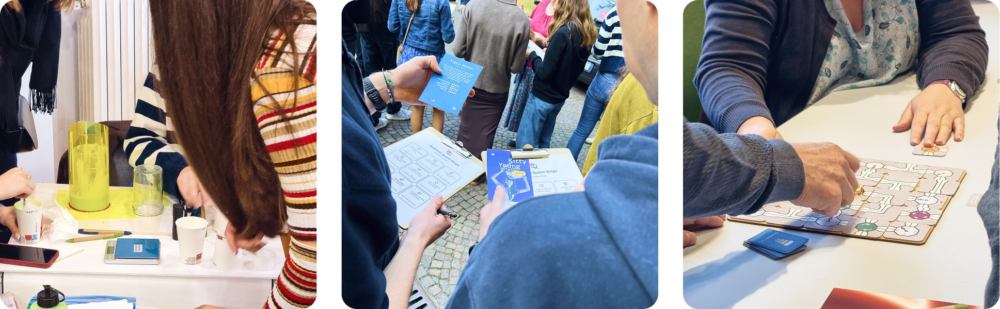
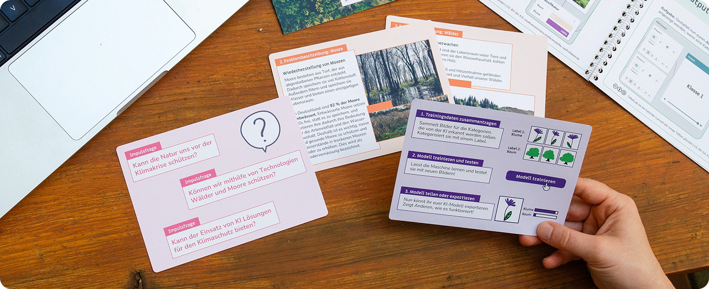
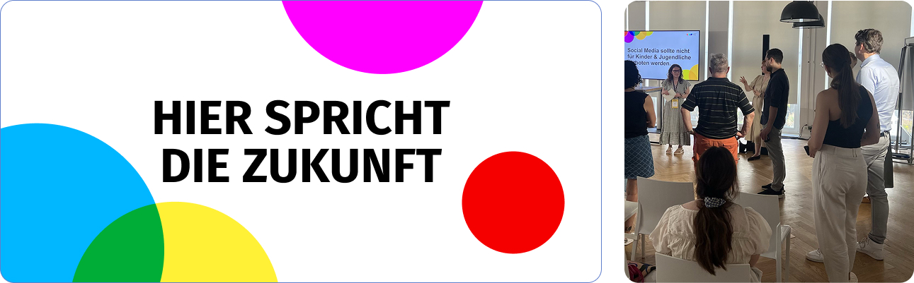

Ausgewählte Workshops
Karriere Quantum Camps
Die Karriere Quantum Camps bringen internationale Gruppen von Schüler*innen und Lehrkräften verschiedener Fachrichtungen zusammen und ermöglichen ihnen einen spannenden Einstieg in die Welt der Quantentechnologien.
Im Laufe einer Woche entdecken die Teilnehmenden die Grundlagen der Quantentechnologien, setzen sich spielerisch mit Quanteneffekten auseinander und entwickeln anschließend einen eigenen Prototypen zum Thema „Meine Quantenzukunft“. Parallel dazu entwickeln die Lehrkräfte ein eigenes Unterrichtskonzept zum Thema Quanten.
- Zielgruppe: Schüler*innen ab 16 Jahren & Lehrkräfte aller Fachrichtungen
- Format: 5-tägiges Camp
- Meine Rolle: Co-Konzeption & Durchführung von zwei Camps (Madrid & Rom)
- Kontext: junge Tüftler gGmbH in Zusammenarbeit mit Goethe-Institut | gefördert vom BMFTR
→ Weitere Informationen zum Projekt: Karriere Quantum

Eine eigene KI-Bilderkennung trainieren: KI trifft Natürlichen Klimaschutz
Nach einer gemeinsamen Einführung in den natürlichen Klimaschutz erhalten sie einen ersten Einblick in KI-Anwendungen und trainieren mit der „GenAI Teachable Machine“ ein eigenes Modell zur Bilderkennung.
Anschließend arbeiten sie in Kleingruppen an einer konkreten Herausforderung: Die KI soll zum Schutz von Wäldern oder Mooren eingesetzt werden. Die Lernenden erarbeiten: Wie könnte eine solche KI aussehen? Was müsste sie können? Und wie könnte ein erster Prototyp ihrer Idee aussehen?
- Zielgruppe: Teilnehmende ab ca. 14 Jahren
- Format: Workshop (3 Stunden)
- Meine Rolle: Co-Konzeption und Durchführung
- Kontext: junge Tüftler gGmbH in Zusammenarbeit mit kosmos b e.V. | gefördert vom BMUKN
→ Weitere Informationen zum Projekt: KI-Box Klima

Hot Takes der jungen Generation zur Digitalpolitik
Wie können junge Menschen die Debatten über digitale Zukunft aktiv mitgestalten? In diesem interaktiven Format setzen sich die Teilnehmenden mit aktuellen Fragen der Digitalpolitik auseinander und positionieren sich zu zugespitzten Thesen. Im Raum kommen sie miteinander ins Gespräch und diskutieren unterschiedliche Perspektiven auf die digitale Transformation.
Im Mittelpunkt stehen unter anderem die Auswirkungen sozialer Medien auf Demokratie und gesellschaftlichen Zusammenhalt, die Rolle digitaler Plattformen im Alltag junger Menschen sowie der Umgang mit digitalen Medien in Bildung und Gesellschaft. Die kontroversen Thesen regen zur Auseinandersetzung an und machen sichtbar, wie vielfältig die Perspektiven junger Menschen auf digitale Transformation sind.
Grundlage der Diskussion bilden die partizipativ entwickelten Positionen des Common Grounds Forum. Ziel des Formats ist es, unterschiedliche Erfahrungen und Meinungen zusammenzubringen, den Austausch zwischen den Teilnehmenden anzuregen und einen offenen Dialog über die Chancen und Herausforderungen digitaler Politik zu ermöglichen.
- Zielgruppe: Alle Interessierten
- Format: Workshop (ca. 45 Minuten)
- Meine Rolle: Co-Konzeption und Durchführung
- Kontext: Common Grounds Forum (Ehrenamtliches Engagement)
→ Weitere Informationen zum Common Grounds Forum
